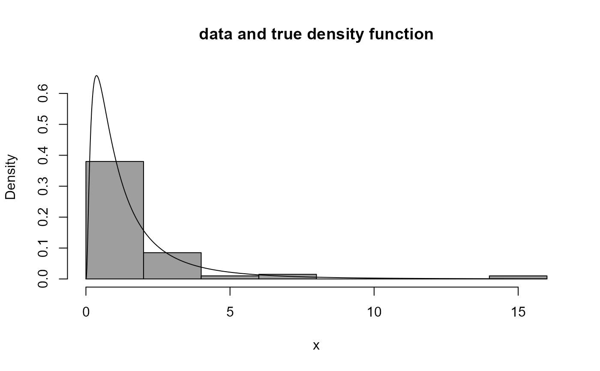
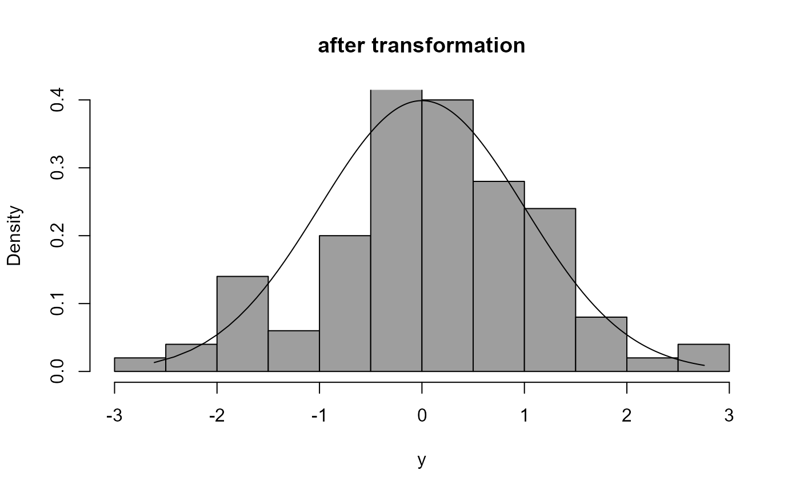
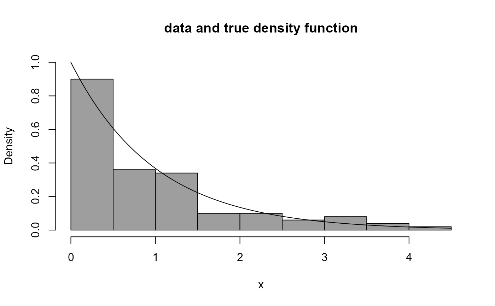
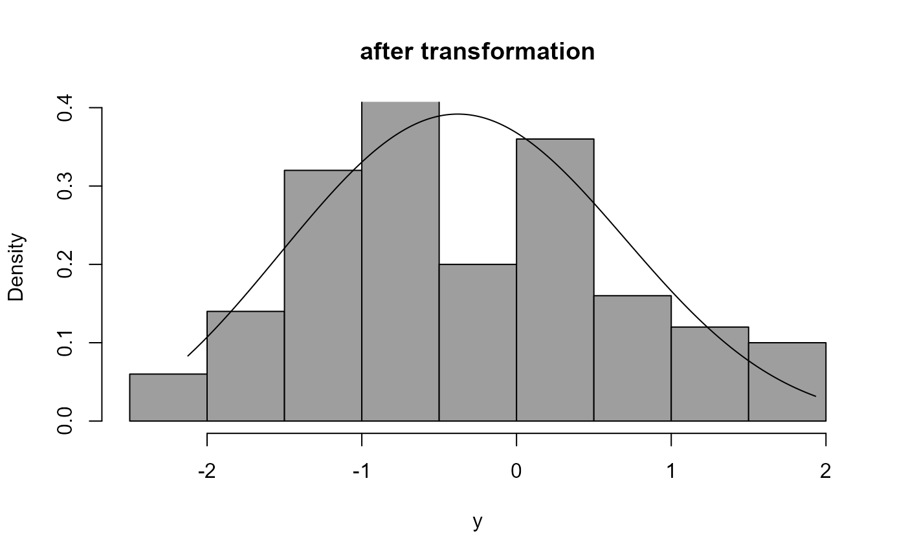
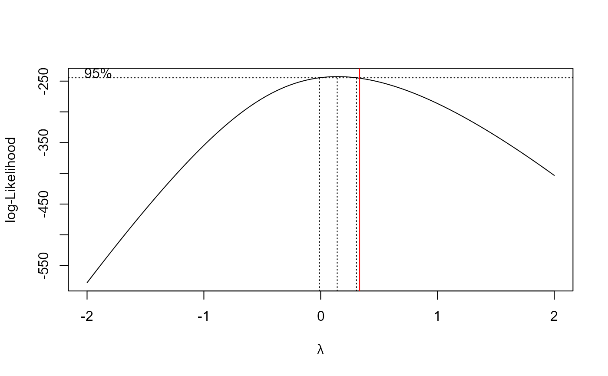
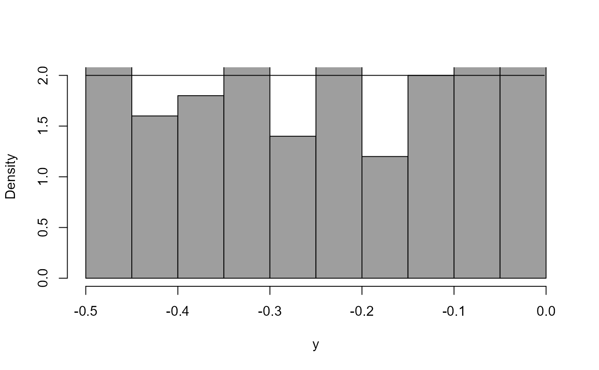
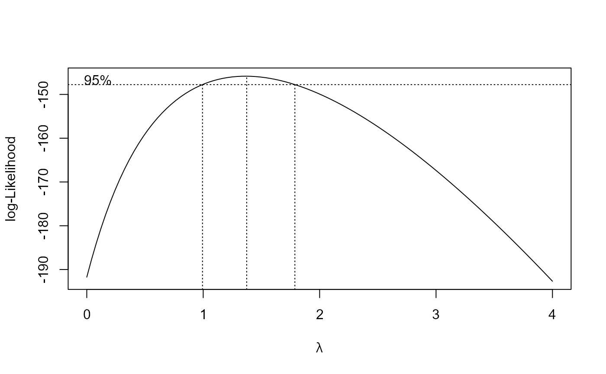

Box-Cox transforms the input data x and plots a histogram of the
transformed data. The Box-Cox transformation parameter is lambda.
If the probability density function (pdf) from which the data have arisen is
known and the function density_fn is supplied to calculate it then
this pdf is also Box-Cox transformed and the resulting transformed pdf
is superimposed on the histogram.
boxcox_plot( x, lambda = 1, density_fn = NULL, breaks = "Sturges", main = "", ... )
Arguments
| x | A numeric vector of data. |
|---|---|
| lambda | A numeric scalar. Box-Cox transformation parameter \(\lambda\). |
| density_fn | A function to calculate the pdf underlying the input data. |
| breaks | The argument |
| main | The argument |
| ... | Further arguments to |
Value
Nothing, just the plot.
Details
The equation $$y = (x ^ \lambda - 1) / \lambda.$$ is a Box-Cox transformation of a variable \(x\) to produce a transformed variable variable \(y\). The value of the parameter \(\lambda\) governs the behaviour of the transformation.
See the vignette Chapter 2: Graphs (More Than One Variable) for more details of what the code in Examples below is doing.
Examples
# Log-normal distribution -------------------- # X has a log-normal distribution if ln(X) has a normal distribution # Simulate a sample of size 100 from a log-normal distribution x <- rlnorm(100) # Plot the data and the log-normal density function boxcox_plot(x, density_fn = dlnorm, main = "data and true density function")# If we want to transform to approximate normality which power should we use? boxcox_plot(x, density_fn = dlnorm, lambda = 0, main = "after transformation")# We can use the data to suggest a good value of lambda. # We need the boxcox() function in the MASS package. library(MASS)#> #>#> #> #># Very loosely speaking ... # In this plot better values of lambda have the largest values. # "Better" means "transformed data closer to looking like a sample # from a normal distribution. # We could choose a nice value of lambda close to the best value. # The interval is a 95% confidence interval for lambda. boxcox(x ~ 1)# exponential distribution -------------------- x2 <- rexp(100) boxcox_plot(x2 ,density_fn = dexp, main = "data and true density function")boxcox_plot(x2, density_fn = dexp, lambda = 1 / 3, main = "after transformation")# A distribution that I made up -------------------- dpn <- function(x) ifelse(x > 0 & x < 1, 2 * x, 0) rpn <- function(n = 1) sqrt(runif(n)) x3 <- rpn(100) boxcox_plot(x3, density_fn = dpn)boxcox_plot(x3, density_fn = dpn, lambda = 2)boxcox_plot(x3, density_fn = dpn, lambda = 1.5)